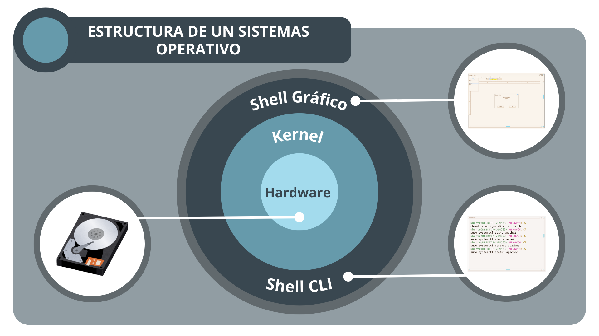
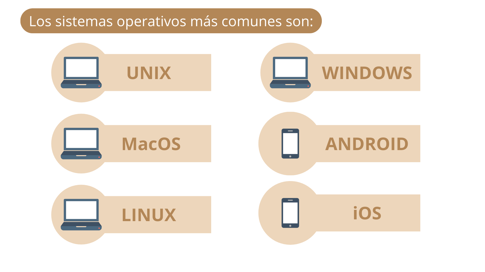

1. Sistemas Operativos
4. Tipos de Sistemas Operativos
Un Sistema Operativo es un programa que te permite realizar actividades en la computadora. Traduce los comandos que el usuario introduce por medio del teclado y el mouse, para que se ejecute la acción deseada.

Kernel
En el núcleo del sistema operativo, llamado kernel, están programadas las funcionalidades del sistema operativo que interactúan directamente con el hardware de la computadora. Sobre esta base, están desarrolladas las aplicaciones que utilizará el usuario en formato de archivos ejecutables.
Shell
Para que el usuario pueda manipular y hacer uso de estas aplicaciones, es necesaria una interfaz. Para eso están los Shell, que son programas que sirven como intermediarios para hacer uso de las aplicaciones, ya sea por entorno gráfico o por consola.
Hay dos clasificaciones principales de sistemas operativos, los multiusuario o los monousuario. Como su nombre lo indica, se diferencian en el número de usuarios a los que puede atender a la vez. Por ejemplo, el sistema operativo de un cajero automático es monousuario, pues atiende sólo a una persona. En cambio, el sistema operativo de un servidor está hecho para atender a muchos usuarios a la vez.

Unix
Sistema operativo multiusuario que permite realizar multiprocesamiento; fue el primero en crearse y fue hecho en lenguaje C, se usa principalmente en servidores, debido a su compatibilidad con casi todos los demás sistemas operativos y su alto nivel de desempeño. Sin embargo, sólo puede administrarse por expertos.
MacOS
Sistema operativo basado en Unix usado principalmente en computadoras Macintosh. Su interfaz amistosa y de fácil operación para el usuario ha sido la clave de la popularidad en la adquisición de computadoras que usan este sistema operativo.
Linux
Sistema operativo libre y de código abierto, es decir, que no se paga una licencia y se puede personalizar. Su interfaz gráfica es similar a las de otros sistemas operativos. Su desventaja es la compatibilidad en sus aplicaciones. Y para configurarlo requiere un nivel un poco elevado de programación e informática, al igual que Unix.
Windows
Windows es el nombre de una familia de distribuciones de software para PC, servidores, sistemas empotrados y antiguamente teléfonos inteligentes desarrollados y vendidos por Microsoft y disponibles para múltiples arquitecturas, tales como x86, x86-64 y ARM.
Android
Sistema operativo móvil basado en el núcleo Linux y otros software de código abierto. Fue diseñado para dispositivos móviles con pantalla táctil, como teléfonos inteligentes, tabletas, relojes inteligentes Wear OS, automóviles con otros sistemas a través de Android Auto, al igual los automóviles con el sistema Android Automotive y televisores Android TV.
iOS
Sistema operativo móvil de código cerrado desarrollado por Apple Inc. Originalmente desarrollado para el iPhone, después se utilizó en dispositivos como el iPod touch y el iPad.
Obra publicada con Licencia Creative Commons Reconocimiento Compartir igual 4.0